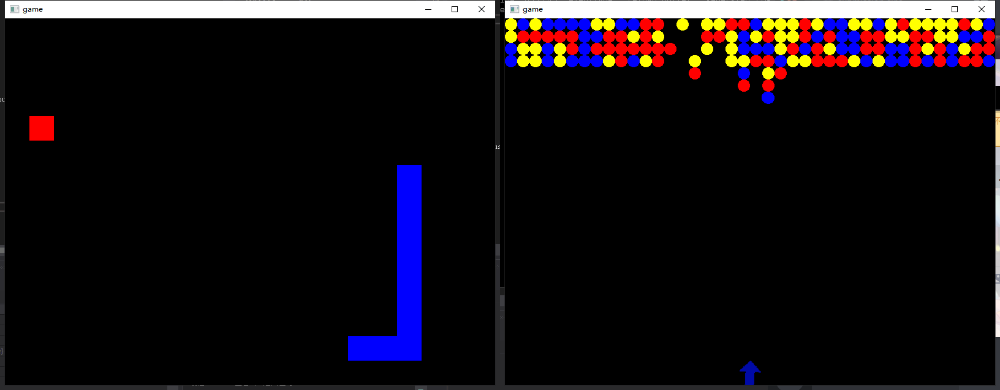
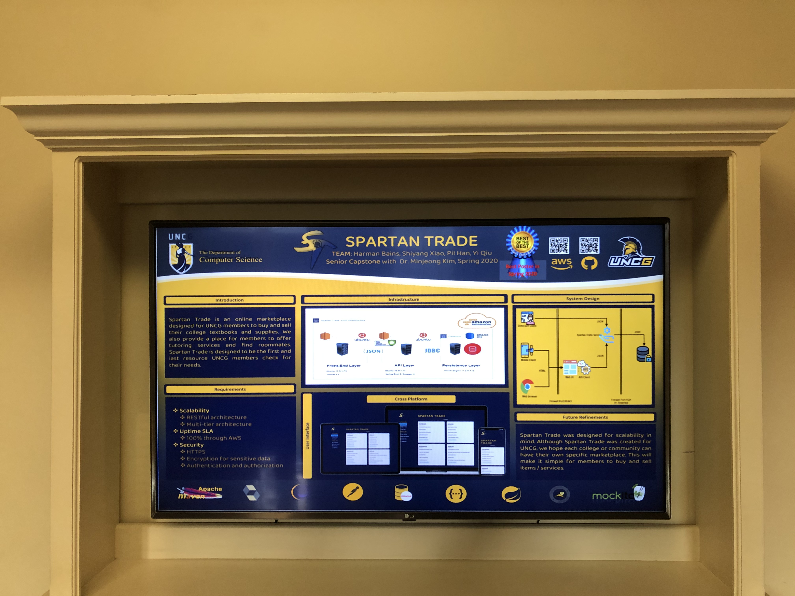
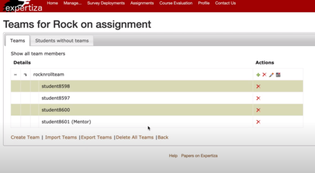
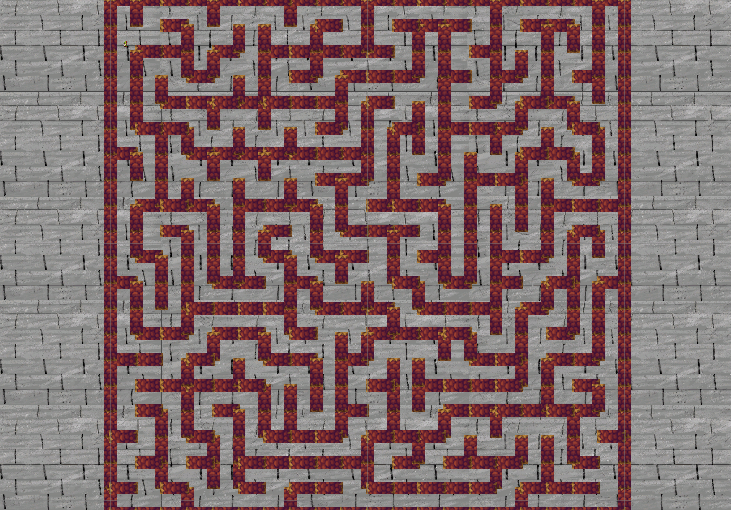
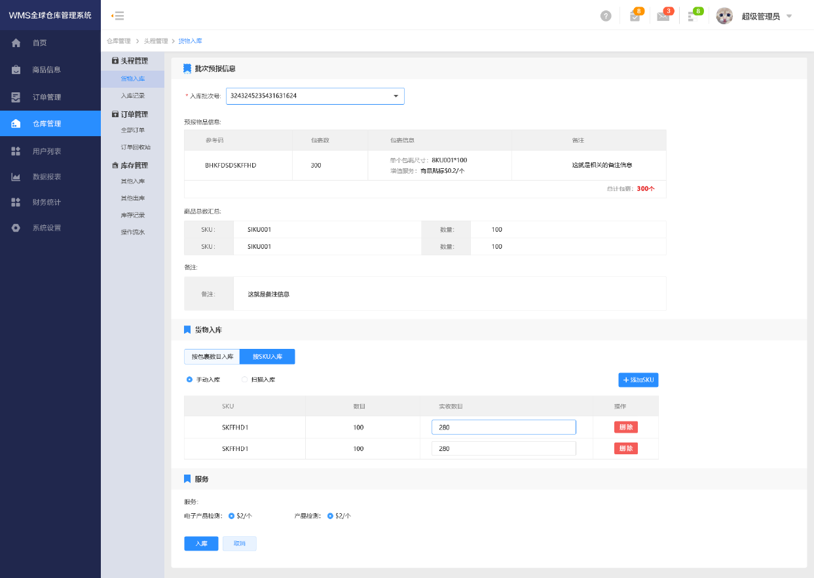

Intro
Hi, This is Yi.
“One takes the behavior of one’s company”, this is true about me and my father. My father is an avid computer enthusiast and also a developer,
since my childhood, I have been deeply influenced by my father and have been very interested in computers. I came into contact with computers
when I was very young and participated in web programming competitions in elementary school. Even though I didn’t win any awards in the
competitions, they became the first experiences self-learned computer programming.
My enthusiasm for computers has never faded, but due to China's unique education method, even after entering middle school, I could only learn
computer-related knowledge through some hacking-related books. Soon, my life came to a turning point; my father immigrated to the United States,
and I was able to come to the United States for education. I chose as many science-related electives as possible in high school and took a web
design course. Eventually, I graduated from high school and attended the computer science department at UNCG.
A lot of extra-curricular accumulation and practice gave me a good skill sets. Before each programming, I can quickly establish a hypothesis that
may reach the correct answer, and try to implement it. With this benefit, in the freshman computer course, I achieved better performance than most
students in the same period. In the university course, the professor of software engineering greatly inspired me. I focus on code specifications
and extensibility of the code, and continuously improve the code I have. Finally, I made my way to the NCSU, one of the best engineering universities
in the US. I started to learn more subjects other than Software Engineering only. I widely attempted all the courses that I believe can be carried
forward to the software development engineering, including Cryptographic, Generative Game design, Security, User Privacy, etc.
Challenges never end. Now, I’m looking for more challenges and I believe the experience and knowledge I have can be the sword that cut off the thorns
and broaden my horizons.
Contact
You can always hit me up through my perma email:
xuegao60189@gmail.com
Or try a faster way using the form here:
Handwrite AI OCR
Keywords:
Image processing, TensorFlow, PYQT, Python

This tool allows users to open an image from the device or write down something by using a mouse on its whiteboard.
Words in the input will be captured and sliced into single letters through Image processing techniques and thresholding.
After passing the letters into the ML model, the console will display the proper result.
My Game Engine
Keywords:
ZMQ, SFML, C++

A simple game engine which builds from the ground up, using a combination of inheritance & composition.
It is simple but comprehensive. It covers Event Systems, Time clock, Replay, External Script Support, and Multiplayer Support.
Games created by this game engine include platformer games, bubble shooter, and snake game.
Automation Tool
This project is done during my internship at Dell Technologies, Shanghai.
It is a tool that can automatically travel through all the possible action paths within a given window.
Unfortunately, I cannot provide further details here due to Dell's Confidentiality Agreement.
Spartan Trade
Member:
Yi Qiu, Shiyang Xiao, Pil Han, Harman Bains
Keywords:
RESTful, Spring, JSP, bootstrap
This project was elected to be the best senior capstone of Spring 2020 and displayed in the UNCG's Computer Science Department Building.

Spartan Trade is a web-based trading system, the purpose is for students & teaching staffs
to list their WTS/WTB for any item.
I played an important role in this team, by implementing the API client and helping my team member with both the UI implementation and UI Multi-platform adaptation.
And I also helped my team to integrate Front-end, API client, and API endpoint to make this project run as a whole.
Expertiza: E2115
Member:
Yi Qiu, Ryan Smith, Jose Molina Melendez, Bahati Wanza
Keywords:
Ruby, Ruby on Rails, NCSU
This project's pull request was approved and merged to NCSU's Expertiza project.

Expertiza is a web student management system under NCSU and is supported by the National Science Foundation.
This application allows students to grade, submit, and peer-review learning objects.
Our team provided a solution to the existing issue of expertiza and created an extension to allow the expertiza to
support more functions (Mentor management for assignments without topics), I played a developer role in this
team and provided a well-decoupled code. Our implementation and unit testing passed the review and checking process by
the offcial expertiza team.
Amazing
Member:
Yi Qiu, Stuart Pelletier, Grey Jenkins, Luke Knudsen
Keywords:
Unity, PCG, Scripting

Amazing is a 2D top-down maze game, the game content is randomly and automatically generated by the level.
The key algorithm we used for this game is Kruskal spanning tree. In this project, I mainly take charge of
handling character's movement, character's collision, and character's interaction with other elements.
WMS Global
Member:
Yi Qiu, Larry Guo, SHITOUREN
Keywords:
Warehouse, Vue, Spring, DATA JPA, JWT, AWS

WMS Global is a Cross-border e-commerce warehouse management system. It allows the sellers to interact with their warehouse,
the actions include sellers uploading labels, sellers moving packages to a new warehouse location,
sellers requesting the warehouse to create shipments, etc. This project is not completed yet, and it is temporarily paused due to understaffing.
The API backend is almost completed, the integration is around 30% there. The front-end UI needs a refactor which is already on our TODO list.